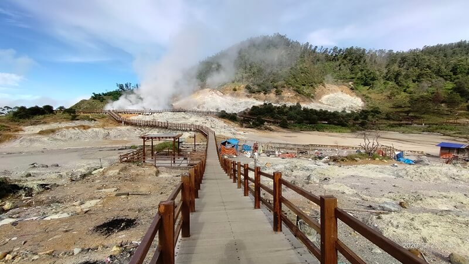

Tujuan dibuatnya website ini adalah sebagai tempat referensi tujuan wisata di dunia.
Selamat datang di website Destinasi Wisata di Dunia, pintu gerbang virtual Anda untuk petualangan tanpa batas di seluruh dunia! Kami dengan bangga mempersembahkan kepada Anda sebuah platform pariwisata yang menggabungkan keajaiban alam, budaya, dan kekayaan dunia yang tak terhitung dalam satu tempat. Dengan visi kami untuk mempersatukan dan menginspirasi para pelancong dari seluruh penjuru bumi, kami mengundang Anda untuk menjelajahi berbagai destinasi eksotis, mengejar petualangan seru, dan mendapatkan wawasan tentang keindahan dunia yang begitu beragam ini. Dengan panduan ahli, tips perjalanan terpercaya, dan sumber daya yang kaya, kami berkomitmen untuk membuat setiap perjalanan Anda menjadi pengalaman tak terlupakan. Bergabunglah dengan kami saat kami memecahkan batasan geografis dan membawa Anda pada perjalanan impian Anda di seluruh dunia.

Dari puncak gunung yang menjulang hingga pantai-pantai berpasir putih yang memikat hati, dari kota-kota yang penuh sejarah hingga hutan-hutan yang mempesona, kami akan membawa Anda dalam perjalanan virtual tanpa batas ke destinasi-destinasi luar biasa di seluruh penjuru dunia. Dapatkan wawasan tentang budaya yang beragam, kuliner yang menggoda selera, dan petualangan tak terlupakan yang menunggu Anda di setiap sudut bumi. Bersama kami, Anda akan menemukan inspirasi untuk merencanakan petualangan berikutnya dan menjelajahi keindahan dunia ini dalam segala keunikan yang dimilikinya. Selamat menikmati perjalanan Anda melalui situs web pariwisata kami, dan mari bersama-sama menjelajahi pesona dunia yang tiada tara.
Wisata olahraga merujuk pada jenis pariwisata yang berfokus pada aktivitas dan acara olahraga sebagai daya tarik utama bagi wisatawan. Ini melibatkan perjalanan ke tujuan tertentu dengan tujuan berpartisipasi dalam atau menyaksikan berbagai jenis kegiatan olahraga. Wisata olahraga dapat mencakup berbagai jenis olahraga, seperti sepak bola, tenis, renang, panjat tebing, selancar, ski, maraton, dan banyak lagi. Wisatawan yang tertarik dengan olahraga tertentu sering melakukan perjalanan untuk mengikuti kompetisi, turnamen, atau acara olahraga khusus di berbagai lokasi di seluruh dunia. Selain itu, mereka juga dapat memanfaatkan fasilitas olahraga di destinasi wisata yang dituju, misalnya bermain golf di lapangan golf yang indah di kawasan pariwisata. Wisata olahraga tidak hanya memberikan pengalaman olahraga yang memuaskan, tetapi juga dapat menggabungkan aspek petualangan dan liburan ke dalam satu paket.
